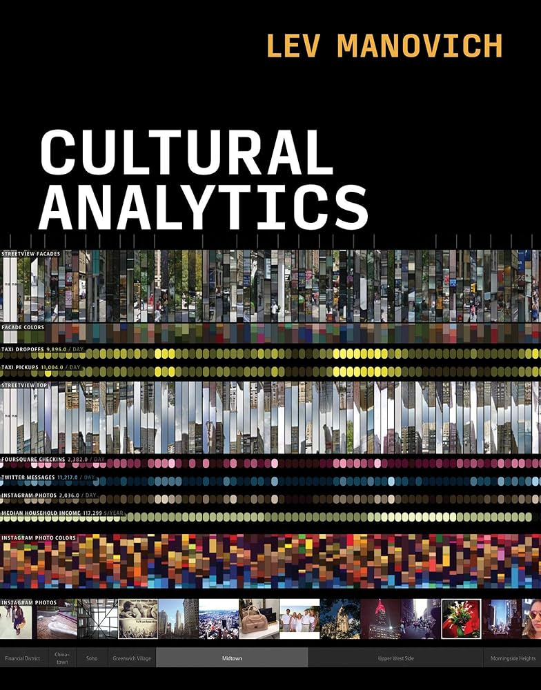

Last year I had the occasion to teach my first - and probably one of the first, if not the first, in Italy - course of Cultural Analytics (kudos to the Department of Sociology and Social Research of Trento for the boldness). Among many other things, it gave me the occasion to decide how much using of the “foundational” Lev Manovich text in the program. Cultural Analytics has also been recently translated in Italian (while we’re at it: kudos also to Raffaello Cortina Editore) generating some attention, at least in a small niche of Italian researchers interested in the topic. Therefore, I am taking some time to share a couple of thoughts about it - maybe one day I should write a proper review.
So, how much did I use of it? Well, not much, a part from various mentions in the introductory lecture, when trying to define what cultural analytics was for me, and how in fact it was different from what sketched in the book. My first concern is indeed about the actual scope of cultural analytics. According to Manovich, cultural analytics is “the analysis of massive cultural datasets and flows using computational and visualization techniques.” (bold added, this is not from the book, but from the introductory article of the Journal of Cultural Analytics) and “The scale of culture in the twenty-first century makes it impossible to see it with existing methods […] cultural analytics refers to […] exploration and analysis of contemporary culture at scale” (bold mine again, this is from the book.) Does cultural analytics need to concern only massive and contemporary datasets? Big data are undoubtedly important for cultural analytics research. The exponential growth in the number and size of freely available data sets - both “traditional” data that are digitised (books, paintings, news corpora, etc.) thus easy to process, and “new” data (social media, online reviews, web searches, etc.) clearly made possible the (relative) explosion of computational studies of culture, but are there reasons to exclude the rest? Analysis of small and old datasets are common in digital humanities - say Franco Moretti’s Style, Inc. Reflections on Seven Thousand Titles (British Novels, 1740–1850), the title says it all - and are there reasons why this is not cultural analytics? I do not see any.
Second, and more importantly, my impression is that the book is pervaded by the idea that with good visualizations, good analyses, and big enough data, the explanatory power will come by itself. In one of the opening examples of the book (full article here), Manovich describes a visualization of more than a million of manga covers, oriented on the axis by standard deviation of pixels’ grayscale values in a page (from least to highest contrast) and by entropy measured over all pixels’ grayscale values in a page (from least details to a lot of details). The visualization is fascinating, and the conclusion is that there are not clear divisions among areas of the figure, making concepts like discrete “styles” not very meaningful. This is quite interesting, but what is the hypothesis tested? How does this fit in a broader, more satisfying (at least for me), theory of culture? As mentioned, these do not seem, according to Manovich, important goals for cultural analytics, that gets defined by its quite specific subject, “analysis of all kinds of media” in “contemporary digital culture”. I spent years, with many others, to sell the idea that “big data needs big theory”, and I am pretty sure you suspect the theory (or the set of ideas) I have in mind.
Perhaps I am not doing cultural analytics, and I should use another name? Computational analysis of culture? Even “Computational evolutionary analysis of culture”? Is this important?
And, of course, there are many other points on which I wholeheartedly agree with the book (just to mention one, the importance of the analyses of visual aspects of culture that, for practical reasons, are often overlooked in computational studies of culture) and I guess that, among other social scientists, we would probably look like doing exactly the same thing, but maybe there are other ten or fifteen persons that could be interested about that!